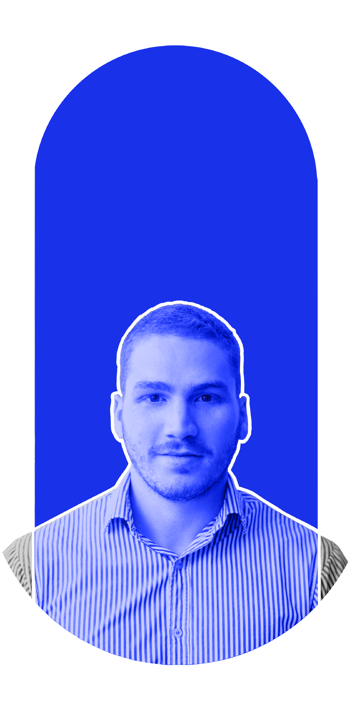

Mi objetivo es desarrollar proyectos que brinden soluciones integrales.

Mi nombre es Tomás, soy diseñador industrial de nacionalidad Argentina, actualmente viviendo en la ciudad de Rio Cuarto, Córdoba. Actualmente estoy trabajando como coordinado técnico en una empresa de telecomunicaciones. En mis tiempos libres disfruto de el entrenamiento al aire libre, carreras en la montaña y me apasiona el buen diseño, las geometrias y la interacción con las personas. Deseo replicar toda mi creatividad en desarrollar paginas simples, concretas y que resuelvan necesidades del usuario.
Siempre me gustó dibujar y ser muy prolijo desde los primeros años de mi vida. Me decidí estudiar Diseño Industrial y La creatividad se volvió mi mayor herramienta. La facultad me formó como persona y como profesional. En un principio me dedique al diseño y producción de muebles, pero una persona que se volvió como un angel de la guarda para mi me contrató como coordinador del area técnica en una empresa de telecomunicaciones. Necesito seguir creciendo, asique empecé a capacitarme en programación para resolver problemas con diseño, creatividad y mucha pasión.
Siempre me gustó dibujar y ser prolijo desde los primeros años de mi vida. Con el tiempo, la creatividad se transformó en una herramienta fundamental para pensar, analizar y resolver problemas. Esa inquietud me llevó a estudiar Diseño Industrial, una etapa clave que me formó tanto a nivel profesional como personal, dándome una mirada integral sobre los procesos, las personas y las soluciones. Mis primeros pasos laborales estuvieron ligados al diseño y la producción de muebles, donde pude aplicar conceptos técnicos, estéticos y funcionales en proyectos reales. Más adelante, una persona que confió en mis capacidades, me impulsó a asumir nuevos desafíos y a potenciar habilidades que hasta ese momento no había explorado. Gracias a ese acompañamiento y a su liderazgo, tuve la oportunidad de incorporarme como coordinador del área técnica en una empresa de telecomunicaciones, rol en el que desarrollé competencias de organización, gestión de equipos y toma de decisiones. Hoy siento la necesidad de seguir creciendo y evolucionando profesionalmente. Por eso comencé a capacitarme en programación, con el objetivo de integrar diseño, creatividad y tecnología para resolver problemas de manera eficiente, estratégica y con mucha pasión.